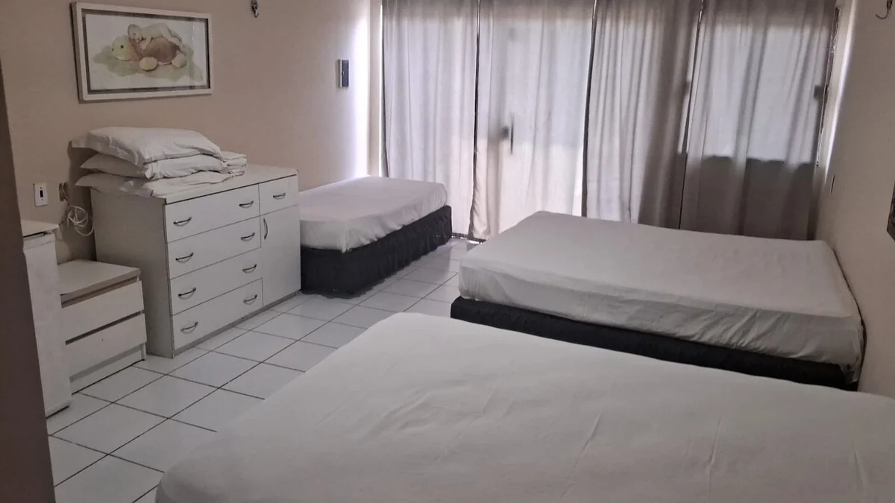

Veja as fotos das acomodaçõesHospedagem no RecantoSuítes para
Suítes para
aproveitar seus dias.
Um lugar acolhedor para renovar as energias, com acesso aos jardins, à piscina e aos espaços de convivência da propriedade.
FrigobarWi-FiAcesso à piscina
Consultar acomodaçõesInforme o número de hóspedes para a equipe indicar as opções disponíveis, a configuração das camas e a capacidade de cada acomodação.